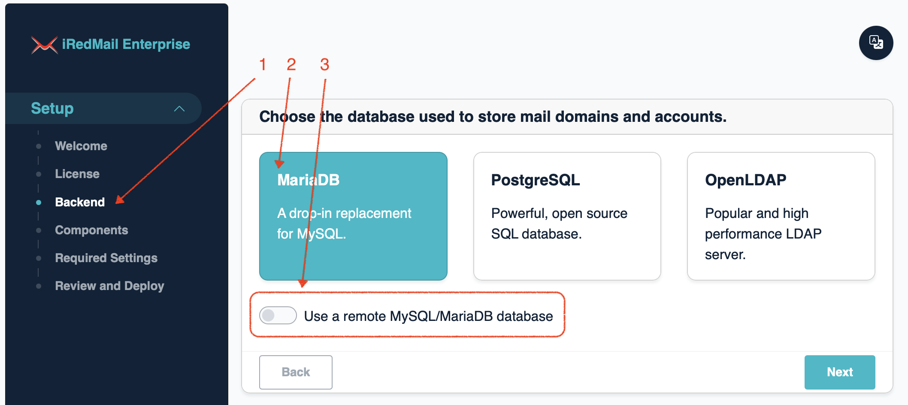
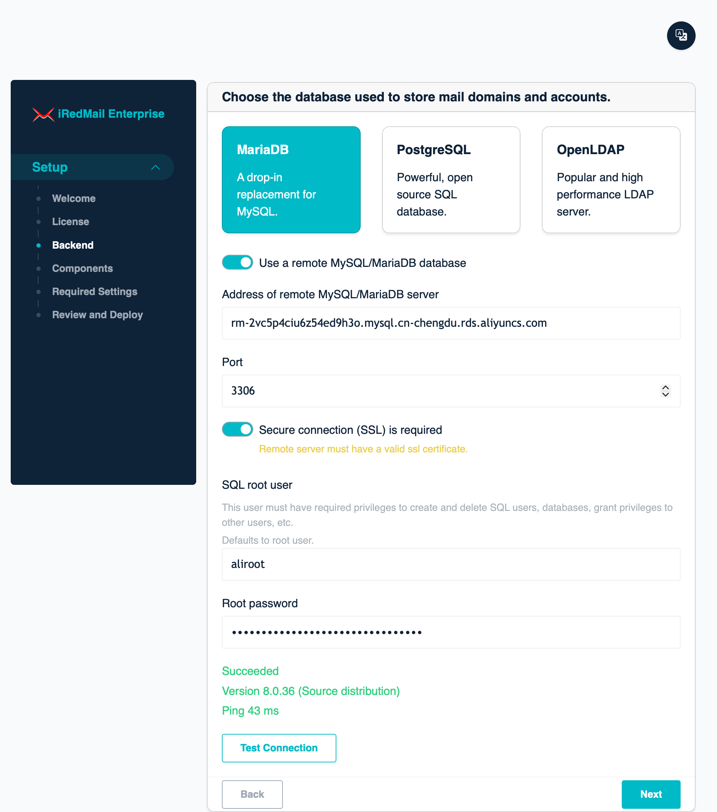
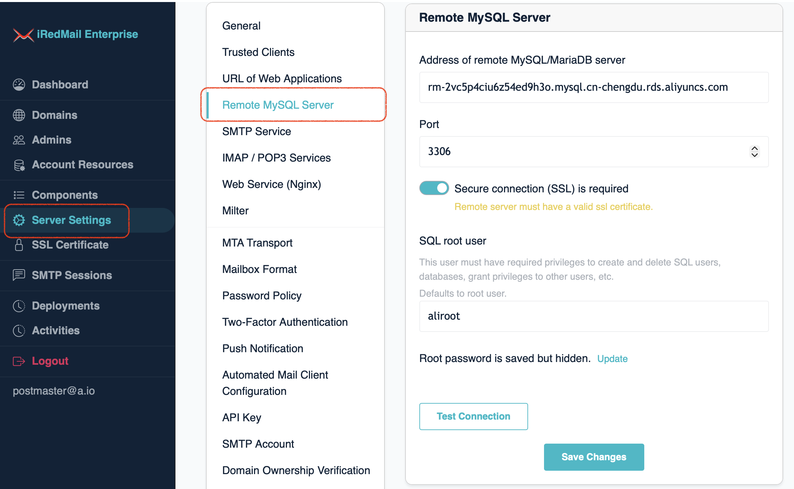

Since version v1.6.0, EE supports using a remote MySQL or MariaDB server as backend database. This can be done during initial setup, not after.
During initial setup, you can choose to use a remote MySQL or MariaDB server as backend database to store mail accounts and application data.
 
After initial setup, you can manage parameters of remote MySQL/MariaDB server.
Server Settings -> Remote MySQL ServerNotes:
Test Connection to test connection to remote SQL server.Update button,
it will show you an input box, input the new password and click
Save Changes to update it.